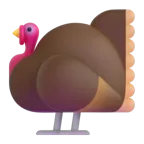

My English World
Book 4 · My Picture Dictionary
Unit 12
Farm Animals
Tap any picture or sentence to listen.
🖼️ Look and say
cow
horse
sheep
goat
pig
chicken
duck
rabbit
donkey

turkey
▶ Play all words
💬 Words in sentences
The cow gives us milk.
🔊
The horse runs fast.
🔊
The sheep says baa.
🔊
The duck swims in the pond.
🔊
▶ Play all sentences
‹ Breakfast
All units
Wild Animals ›